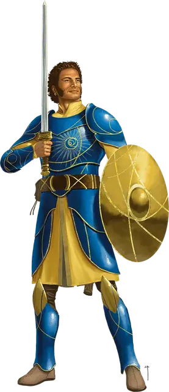

Сэр Джаред
Sir Jared
Средний Гуманоид, нейтрально-добрый, именной НИП

Класс Доспеха 20 (латы, щит)
Хиты 90 (12к8 + 36)
Скорость 30 футов
| мод | спас | ||
|---|---|---|---|
| СИЛ | 18 | +4 | +7 |
| ЛОВ | 12 | +1 | +1 |
| ТЕЛ | 17 | +3 | +6 |
| мод | спас | ||
|---|---|---|---|
| ИНТ | 13 | +1 | +1 |
| МДР | 14 | +2 | +2 |
| ХАР | 17 | +3 | +3 |
Навыки Атлетика +7, Восприятие +6, Выживание +5, Магия +4
Иммунитет к состояниям испуг, ослепление, очарование
Чувства пассивное Восприятие 12
Языки Общий, Полуросликов
Опасность 5 (1800 опыта)
Бонус мастерства +3
Действия
Мультиатака. Сэр Джаред совершает три атаки Длинным мечом.
Длинный меч. . Рукопашная атака оружием: +7 к попаданию, досягаемость 5 футов, одна цель. Попадание: 8 (1к8 + 4) рубящего урона плюс 4 (1к8) урона излучением. При результате на кости "19" или "20" Джаред совершает критическое попадание.
Реакции
Защити союзника. Джаред создаёт помеху атаке одного существа, которое он может видеть в пределах 5 футов, при условии, что эта атака совершается не по Джареду.
Описание
Джаред - странствующий рыцарь, который является отличным связным для групп, пользующихся покровительством Солнечного бастиона. Бывший наемник, Джаред благодарит Илариона за то, что тот помог ему изменить свой образ жизни и использовать свои навыки во благо, а не ради золота, но он чувствует себя недостойным организации и чувствует себя одиноким после столь долгого отсутствия в Солнечном бастионе.